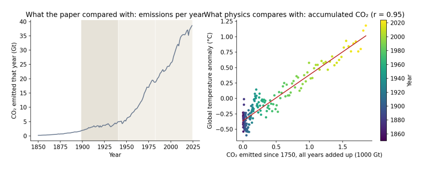
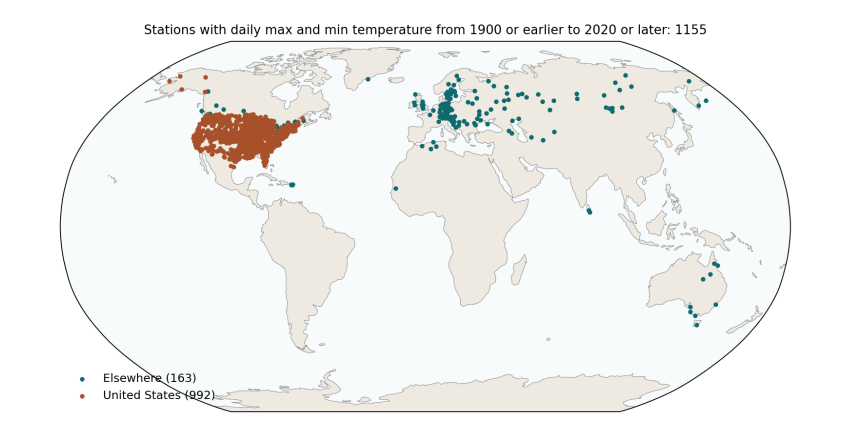

5. Five things the climate system teaches¶
5.1 Temperature follows the CO₂ that has built up, not this year’s emissions¶
When we burn fuel, the carbon dioxide does not vanish at the end of the year. A large part of it stays in the atmosphere for centuries, trapping a little more heat every year it is there. The warming effect at any moment therefore depends on how much CO₂ has accumulated in the air, not on how much was released in the most recent few decades. This is why climate scientists speak of a carbon budget: a total number of tonnes that can be emitted, ever, before a given level of warming is reached.

Figure 5.1. Left: CO₂ emitted each year, 1850–2024, the quantity the paper compared with warming. The shaded bands are the paper’s three windows. Right: each dot is one year, placed by the total CO₂ emitted from 1750 up to that year (across) and that year’s global temperature anomaly (up), coloured from purple (1850) to yellow (2024). The red line is the best straight-line fit. Data: Our World in Data; HadCRUT5.
How to read Figure 5.1. The left panel shows why the paper’s comparison looks so striking: yearly emissions were low before 1940 and then rose steeply. But the right panel is the comparison physics actually predicts. As accumulated CO₂ grows from left to right, temperature rises along an almost straight line, with a correlation of 0.95. The scatter around the line is real, and it comes from the other influences explained below, but the overall relationship is close and steady. Comparing a window’s warming rate with the emissions released during that window is a different test, and not one that any climate model or theory proposes.
5.2 There was a second hand on the dial¶
Burning coal and oil does not only release CO₂. It also releases sulfur dioxide, which forms tiny droplets of sulfate in the air. These droplets reflect sunlight back to space and help clouds reflect more, so they cool the surface. After the Second World War, industrial output rose fast, much of it without filters, and sulfate pollution rose with it. From the 1970s, clean-air laws in Europe and North America cut it back.
Climate scientists measure the effect of each of these influences as radiative forcing: the change in energy flowing into the climate system, in watts per square metre of the Earth’s surface. Greenhouse gases have a positive forcing (they warm); sulfate pollution has a negative forcing (it cools). Over the paper’s middle window, 1941–1982, the total human forcing rose by about 0.5 watts per square metre, but the aerosol part fell by about 0.7, offsetting much of the greenhouse warming. The paper’s attempt to account for aerosols used satellite measurements that only begin in 1980, after the period in question, so it could not capture this.
5.3 The stations were not the world¶
The paper calls its results global, but its sample is not. Using NOAA’s station inventory, I rebuilt the paper’s selection rule: stations recording both daily maximum and minimum temperature from 1900 or earlier until 2020 or later.

Figure 5.2. Every GHCN-Daily station that records daily maximum and minimum temperature from 1900 or earlier to 2020 or later: 1,155 stations in 30 countries. Orange: United States (992, or 86%). Teal: everywhere else (163). The paper’s final sample, after removing stations with too many missing days, was 992 stations in 29 countries, 840 of them (85%) in the United States. Data: NOAA GHCN-Daily station inventory.
How to read Figure 5.2. Each dot is a weather station. The map shows what the paper’s sample covers and, just as importantly, what it leaves out: almost nothing in Africa, South America, South Asia or the Middle East, and nothing at all over the oceans, which cover 71% of the planet. The contiguous United States is about 1.6% of the Earth’s surface. A trend computed from these stations, with each station counted equally, is mostly a trend for the eastern and central United States.
That matters for the early-century result, because the United States had an exceptionally hot 1930s, the decade of the Dust Bowl. You can see it in the orange line of Figure 6.1 below: a sharp bump in the 1930s that the global record does not share to anything like the same extent.
5.4 Old thermometers need correcting¶
Over a hundred and twenty years, almost every weather station changes. It moves to a new site, gets a new kind of thermometer or shelter, finds a town growing up around it, or changes the time of day at which it is read. In the United States, many volunteer observers switched from reading their thermometers in the late afternoon to reading them in the morning, mostly after 1950. Because of how daily maximum and minimum thermometers work, that switch makes later decades look cooler than they really were. Climate scientists documented this “time of observation bias” in the 1980s and correct for it (Karl et al. 1986), along with station moves and instrument changes, in a process called homogenisation. The paper used the raw daily readings, without these corrections, which is a likely reason its middle window shows cooling of −0.13 °C per decade where the corrected US record shows −0.06.
The paper’s summary table also contains values that suggest something went wrong in cleaning the raw data. It reports a 25th percentile of daily minimum temperature of −72.8 °C, which is lower than the minimum it reports (−64.65 °C), and a highest daily minimum of only 13 °C, which is implausibly low for a sample dominated by US summers. These are worth checking before any trend is interpreted.
5.5 Seventy million rows are not seventy million facts¶
Today’s temperature is a lot like yesterday’s, and one town’s is a lot like the next town’s. Treating every day at every station as a separate, independent piece of evidence makes any result look extremely certain, which is why the paper reports p-values of 0.0000 throughout. When the similarity of neighbouring years is allowed for, a 42-year global record contains roughly 15 to 30 independent years of information, not millions, and the honest uncertainty is the width of the error bars in Figure 4.1.